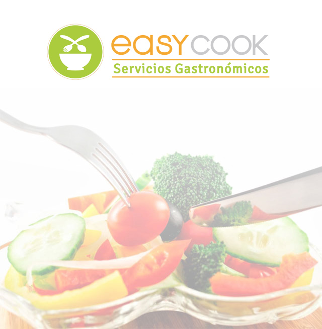

Easy Cook es una empresa que ofrece una propuesta de servicio gastronómico integral, especialmente formulada a la medida de las necesidades organizacionales
Easy Cook es una empresa argentina que desde el inicio de sus operaciones en el año 2012, trabaja para brindar un servicio acorde a las necesidades de cada cliente, buscando alcanzar la excelencia día a día, y manteniendo desde entonces un crecimiento continuo, basado en un proyecto a largo plazo. Uno de nuestros principales desafíos es posicionar a Easy Cook entre los líderes del mercado gastronómico argentino alentando el uso de ideas innovadoras y aplicando en cada proceso las tecnologías adecuadas a cada requerimiento. Somos aliados estratégicos de nuestros clientes, construyendo relaciones a largo plazo, y brindamos un servicio de excelencia basándonos en nuestra experiencia en el rubro. Trabajamos en equipo de manera proactiva lo que nos permite cuidar al cliente externo así como al interno, apoyándonos en la capacitación permanente.
